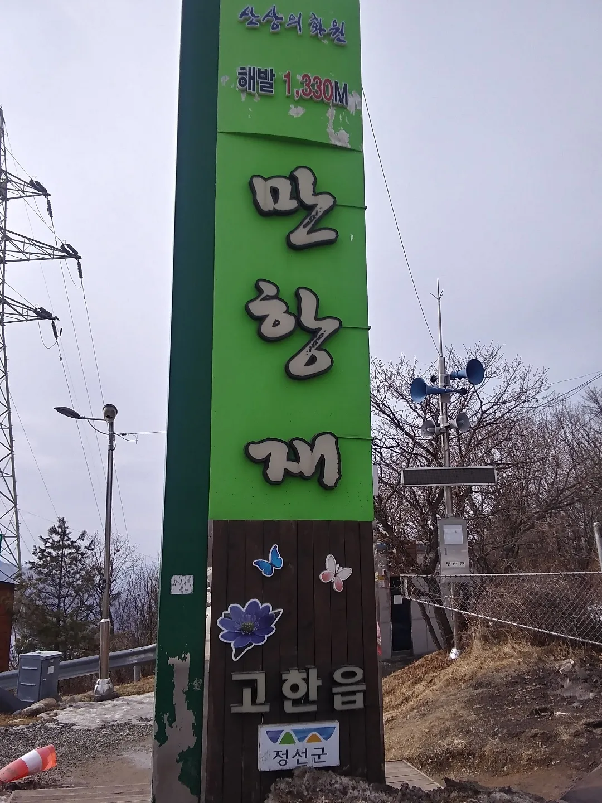
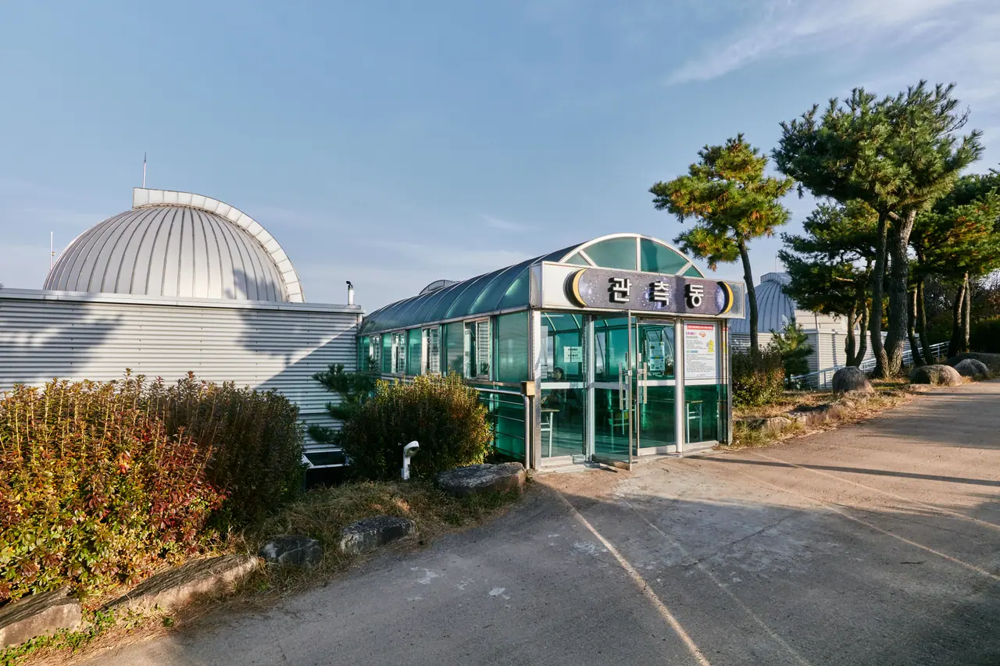
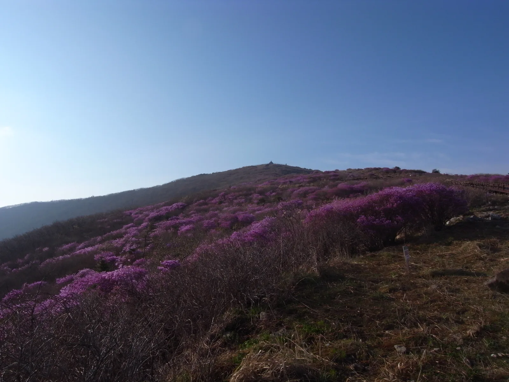
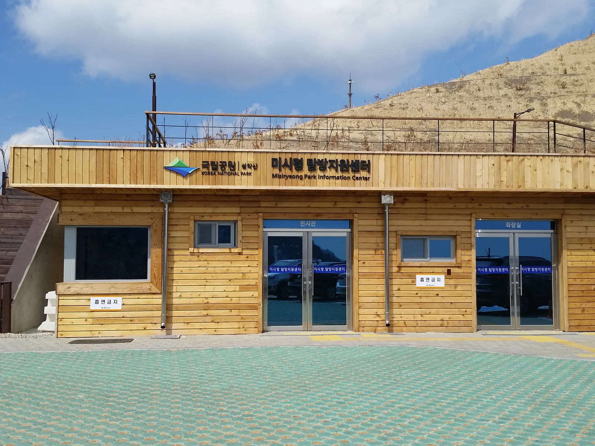

▲ 설악산 내설악 만경대. 한계령과 미시령이 이 산줄기를 넘는다 ⓒ 강원특별자치도 (공공누리 제1유형)
해안 도로는 옆을 봅니다. 조수석 창밖으로 바다가 계속 따라옵니다.
고갯길은 아래를 봅니다. 올라가는 동안 방금 지나온 길이 발밑에 깔리고, 정상에서는 산줄기가 겹겹이 펼쳐집니다. 성격이 완전히 다른 드라이브입니다.
1. 만항재 — 1,330m, 차로 닿는 가장 높은 곳
자동차 도로가 지나는 국내 최고 지점입니다. 해발 1,330m이며 414번 지방도가 지납니다.
정선과 태백, 영월 3개 시·군의 경계가 이 지점에서 만납니다. 등산이 아니라 운전만으로 1,330m에 설 수 있다는 점이 이 길의 핵심입니다.
📍 1,330m는 어느 정도인가
기온은 고도 100m마다 대략 0.6℃씩 떨어집니다. 해수면 대비 8℃ 가까이 낮은 셈입니다.
한여름에도 서늘하고, 가을에는 평지보다 3~4주 먼저 단풍이 듭니다. 반대로 결빙도 먼저 옵니다. 11월이면 노면 상태를 확인하고 올라가야 합니다.

▲ 만항재 표지판에 "해발 1,330M"가 그대로 적혀 있다. 행정구역은 정선군 고한읍이다 ⓒ Dittwjfsdgkvkdjg, Wikimedia Commons (CC BY-SA 3.0)
2. 성삼재 — 1,102m, 지리산을 가로지르는 길
지리산 성삼재는 해발 1,102m입니다. 1988년 개통한 861번 지방도(노고단로)를 이용해 오릅니다.
천은사에서 성삼재휴게소까지 약 10km 구간입니다. '하늘 아래 첫 휴게소'로 불리며, 노고단으로 향하는 등산객의 출발점이기도 합니다.
| 고개 | 해발 | 구간 |
|---|---|---|
| 만항재 | 1,330m | 정선·태백·영월 경계 · 414번 지방도 |
| 성삼재 | 1,102m | 전남 구례 · 861번 지방도 · 천은사~성삼재 약 10km |
| 한계령 | 920m | 인제 북면 ↔ 양양 서면 |
| 미시령 | 826m | 고성 토성면 ↔ 인제 북면 · 옛 56번 지방도 |

▲ 고갯길은 곡선 반경이 작고 경사가 이어진다. 오르는 길과 내려오는 길의 운전이 완전히 다르다 ⓒ 한국관광공사 (공공누리 제1유형)
3. 한계령과 미시령 — 설악을 넘는 두 길
설악산 줄기를 넘는 길은 둘입니다. 한계령과 미시령입니다.
한계령은 도로 높이 기준 해발 920m로, 인제 북면과 양양 서면을 잇습니다. 지도에 표기되는 1,004m는 고갯마루 남쪽 봉우리의 높이여서 실제 주행 고도와는 다릅니다. 굽이가 길게 이어지며 능선 조망이 좋습니다.
미시령은 해발 826m로 고성 토성면과 인제 북면을 연결합니다. 현재 미시령터널이 따로 뚫려 있어, 옛길은 드라이브 목적으로 남은 구간에 가깝습니다.
📍 터널이 생긴 뒤 옛길의 성격
터널이 뚫리면 옛 고갯길은 통과 교통이 빠져나갑니다. 화물차와 급한 차량이 터널로 가면서, 고갯길에는 일부러 그 길을 택한 차만 남습니다.
드라이브 입장에서는 오히려 좋아지는 셈입니다. 다만 통행량이 줄면 제설과 노면 관리 우선순위도 함께 내려갑니다. 겨울철에는 통제 여부를 먼저 확인해야 합니다.

▲ 성삼재 동쪽으로 이어지는 노고단 능선(봄 철쭉 시기). 성삼재는 이 능선으로 오르는 출발점이다 ⓒ Eggmoon, Wikimedia Commons (CC BY-SA 3.0)
4. 오르는 것보다 내려오는 것이 어렵습니다
고갯길에서 사고가 나는 쪽은 대개 내리막입니다.
긴 내리막에서 브레이크만 계속 밟으면 패드와 디스크가 과열됩니다. 마찰력이 떨어지면서 페달이 깊게 들어가는 페이드 현상이 나타납니다.
| 항목 | 내용 |
|---|---|
| 엔진 브레이크 | 수동 모드나 L·2단으로 낮춰 속도 억제 |
| 전기차·하이브리드 | 회생제동을 최대로 — 배터리 충전까지 됨 |
| 브레이크 | 계속 밟지 말고 짧게 끊어 사용 |
| 냄새가 나면 | 즉시 안전한 곳에 정차 후 식히기 |
전기차는 고갯길에서 유리한 면이 있습니다. 올라갈 때 소모한 전력의 일부를 내려오면서 회수합니다. 회생제동을 최대로 두면 브레이크를 거의 쓰지 않고도 속도가 잡힙니다.

▲ 설악산국립공원 미시령 탐방지원센터. 터널이 뚫린 뒤 옛 미시령길은 통과 교통이 빠져나갔다 ⓒ Misiryeong, Wikimedia Commons (CC BY-SA 4.0)
5. 고도가 계절을 앞당깁니다
고갯길의 실질적인 매력은 계절이 먼저 온다는 점입니다.
단풍은 고도가 높은 곳에서 먼저 듭니다. 평지가 아직 초록일 때 1,000m 위는 이미 물들어 있습니다. 같은 날 같은 산에서 정상은 단풍, 아래는 여름인 구간을 통과하게 됩니다.

▲ 고도가 높을수록 단풍이 먼저 든다. 고갯길은 그 경계를 차로 통과하는 길이다 ⓒ Wikimedia Commons

▲ 같은 지역이라도 고도에 따라 색이 도는 속도가 다르다. 고갯길은 그 차이를 한 번에 지나간다 ⓒ 한국관광공사 (공공누리 제1유형)
6. 출발 전 확인할 것
| 항목 | 이유 |
|---|---|
| 통제 여부 | 기상·낙석·공사로 구간 통제가 잦음 |
| 연료·충전 | 고갯길 주변은 주유소·충전기가 드묾 |
| 브레이크 | 패드 잔량이 적으면 긴 내리막에서 한계 |
| 겉옷 | 정상은 평지보다 5~8℃ 낮음 |
| 주차 | 휴게소·전망대 주차 면수가 적어 주말 오전 포화 |
7. 정리
자동차 도로가 지나는 국내 최고 지점은 해발 1,330m 만항재이며 414번 지방도가 지납니다. 정선·태백·영월 3개 시·군의 경계입니다.
지리산 성삼재는 1,102m로 1988년 개통한 861번 지방도(노고단로)를 이용하며 천은사에서 약 10km입니다. 설악을 넘는 한계령은 도로 높이 920m, 미시령은 826m입니다.
운전에서 어려운 쪽은 오르막이 아니라 내리막입니다. 엔진 브레이크와 회생제동으로 속도를 잡고 브레이크는 끊어 써야 합니다. 고도가 높을수록 단풍과 결빙이 모두 먼저 오므로, 통제 여부와 기온을 미리 확인하는 편이 좋습니다.